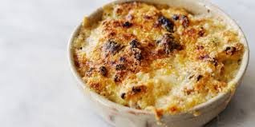

Ingredients
- 170g torchio pasta
- 170g mornay sauce
- 1/4 shredded cheddar cheese
- 1/2 tsp toasted bread crumbs
- 1/8 tsp minced chives
- Mornay Sauce
- 3 Tbsp Unsalted Butter
- ¼ cup Flour
- 2 cups Whole Milk
- 1/8 tsp Paprika
- Hot Sauce to taste
- Dijon Mustard to taste
- Kosher Salt to taste
- 56g Cream Cheese
- 56g Shredded Parmesan
- 56g Shredded White Cheddar
- 56g Shredded Cheddar
Recipe Method
- Cook pasta for 45 seconds until al dente and drain
- Make the mornay sauce. Melt the butter in a small saucepan and add the flour, stirring constantly.
- When the butter and flour is blended completely, add the milk, stirring rapidly. Continue stirring until
the mixture is thickened.
- Add in the four cheeses and stir over low heat until the cheese melts and remove from heat.
- Add kosher salt, paprika, hot sauce and dijon mustard.
- Toss pasta in mornay sauce over heat until coated well.
- Sprinkle shredded cheddar cheese on top and place in broiler for 45 mins.
- Sprinkle chives and breadcrumbs before serving.